[SH4] Henry's Long, Long Day
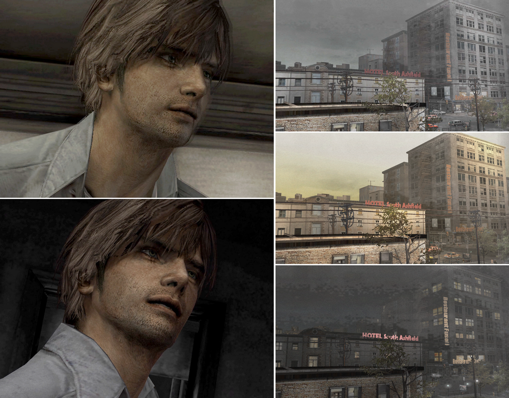
The Passage of Time in the Game and the Mystery of His Stubble, Haha
This is a mirror of the DeviantArt version linked above, provided as a backup and for easier access.

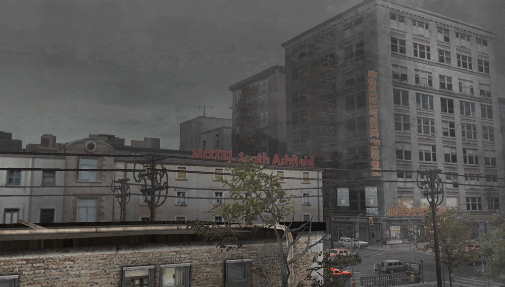
The game starts on the 5th day of being locked up, but the in-game time only covers one day. The view outside the window changes from morning to night. *The latter part remains at night.
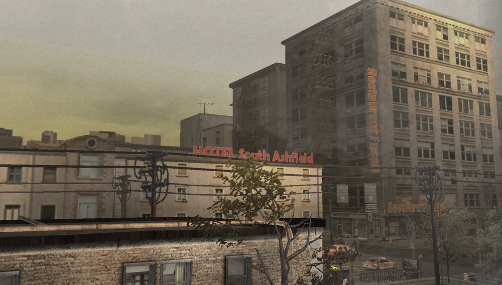
It's something the official guide book also emphasizes, and you can tell just by looking out the window.
The sky gradually turns to dusk, the restaurant across the way lights up... the level of detail is just incredible.
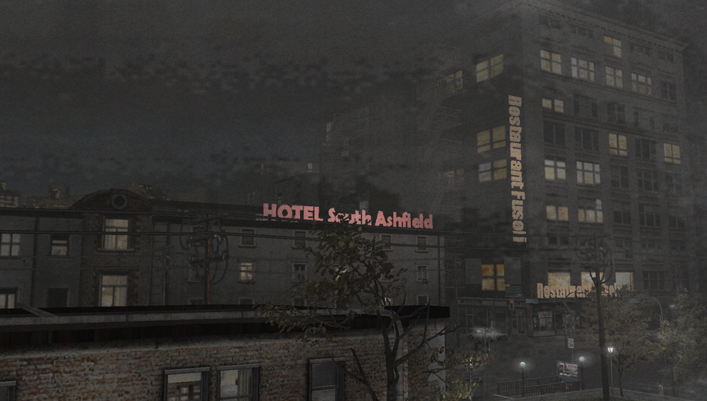
I think it does a great job of expressing that sense of isolation, being shut inside a room while only the outside world keeps changing.
Well, once you grow up and learn how things work behind the scenes, you realize it's just that the textures are swapped out when you come back to the room, but I still remember how "wow!" it felt back then.
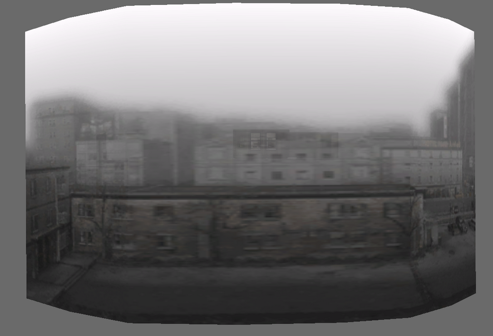
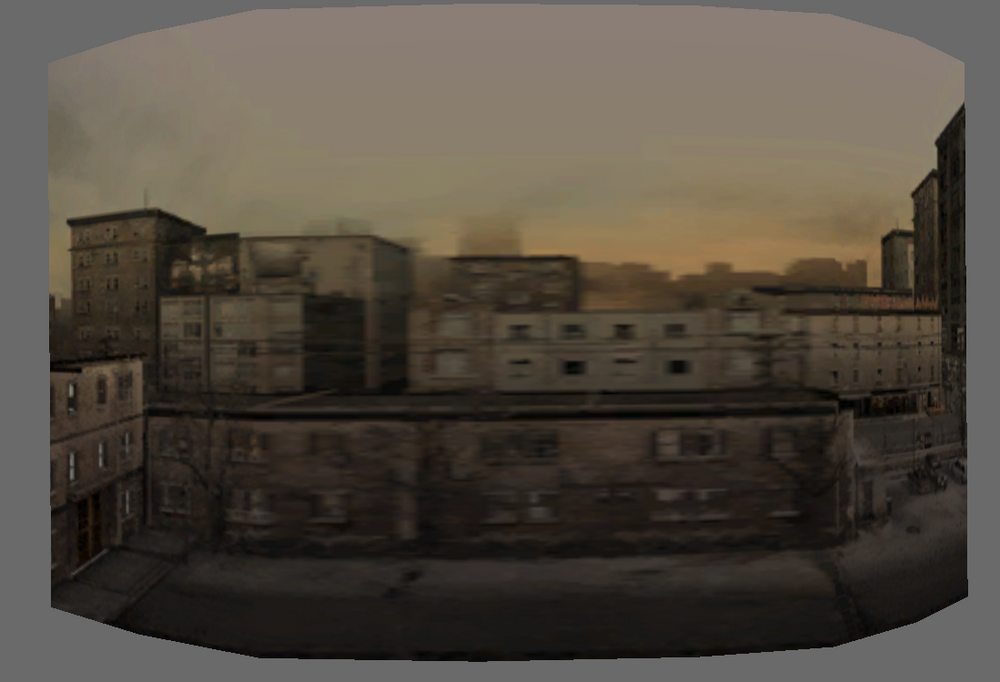
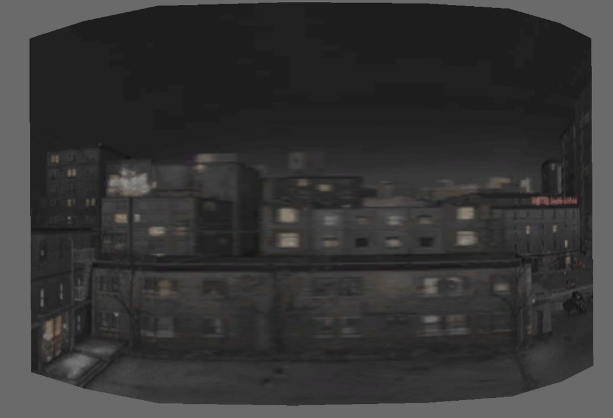
(file name: rl00a.bin, rl00c.bin, rl00d.bin)
But that's not the only fine detail.
The room itself also actually gets a little more sooty over time. Room 302 is old and weathered from the beginning, but the texture files change and it gets even sootier as time goes on, suggesting that the encroachment had already started before the hauntings showed up.
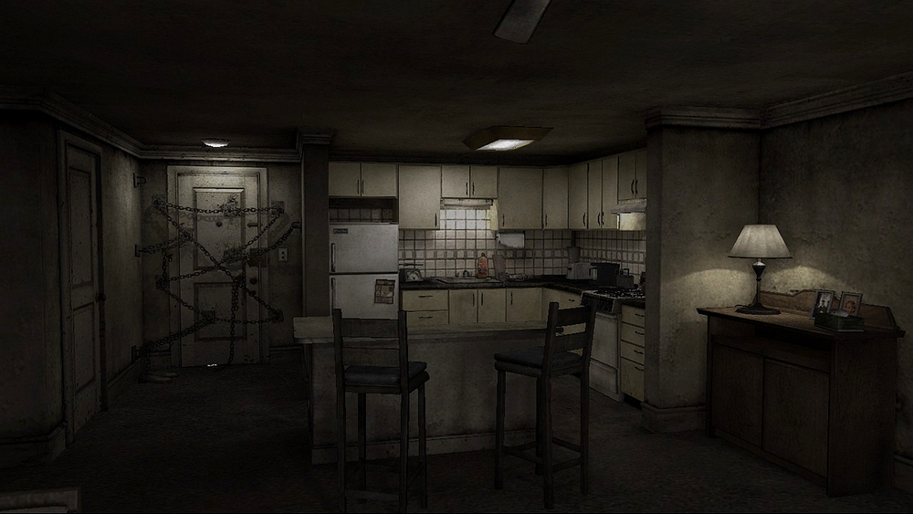
When the ceiling fan falls, that's when the real intrusion begins, but even then the room's lighting actually changes as well.
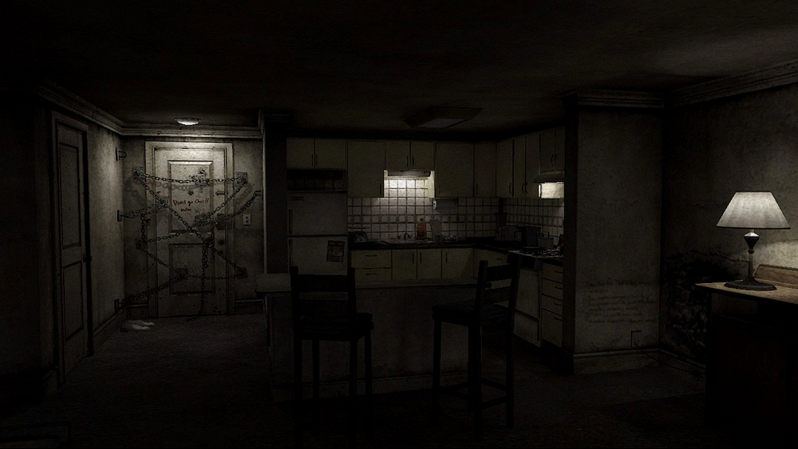
It becomes noticeably darker in the second half, the ceiling light in the kitchen goes out, making the remaining lights really pop. I love how the details are so well thought out.
A long time ago, someone told me that Henry's stubble gradually gets longer and thicker too, so I took some screenshots and compared them..., but that turned out to be false! Haha.
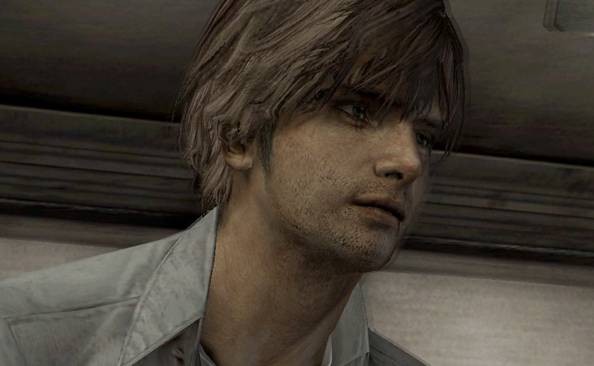
Early part / Later part
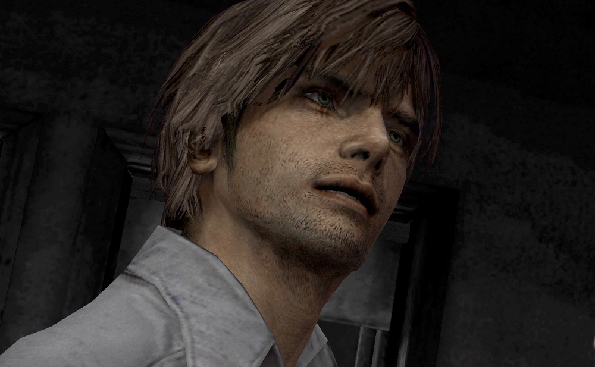
What do you think? Hasn't changed, right?